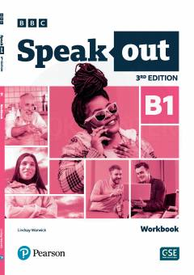

SBIngliz tili B1 darajasi uchun mo'ljallangan amaliy ish daftari.
Ushbu nashr o'rta darajadagi (B1) ingliz tili o'rganuvchilar uchun mo'ljallangan bo'lib, lug'at boyligi, grammatika va talaffuzni yaxshilashga qaratilgan amaliy mashqlarni o'z ichiga oladi. Kitob darslikdagi mavzularni mustahkamlash va o'z-o'zini tekshirish uchun qulay ish daftari formatida tuzilgan.